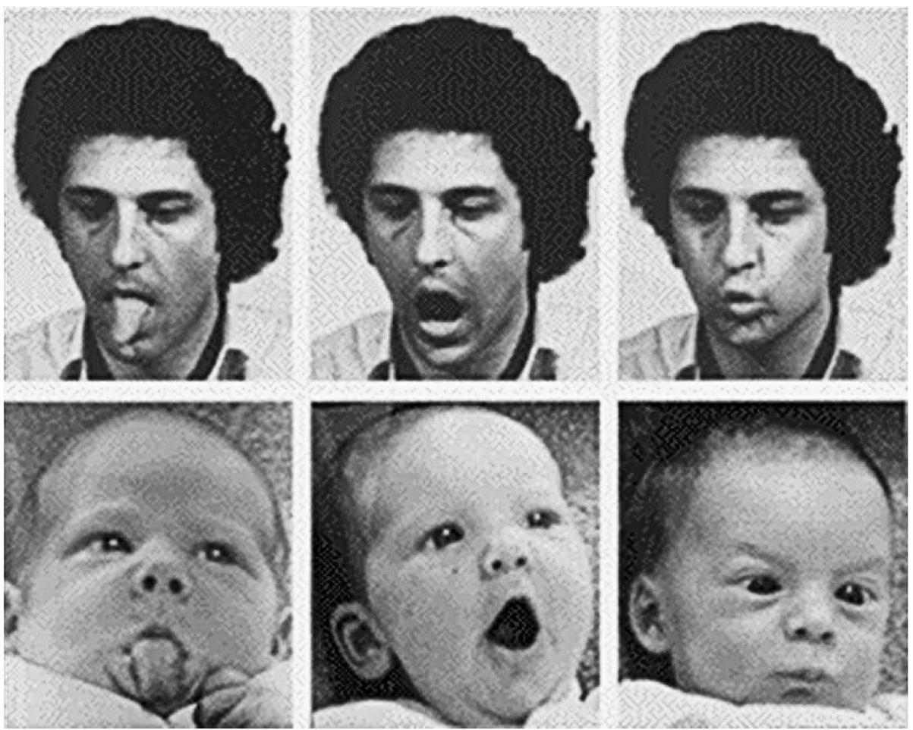

在婴儿的世界中，最有趣的就是自己以外的人。研究显示，婴儿从出生起就对人脸着迷。确实，大脑中有一个专门用来处理脸部信息的系统，似乎在婴儿和成人的大脑中都起着同样的作用。关于新生儿和婴儿的实验表明，比起其他刺激物，他们总是更喜欢看到脸，尤其是活生生的、表情丰富的脸。眼睛是尤其有趣的。新生儿喜欢看到眼睛直视他们的脸。他们不喜欢看到眼睛看向旁边的脸。婴儿对“面无表情的脸”——在一个实验中，母亲故意停止和婴儿的互动并且看上去是在发呆——也会有负面的反应。当婴儿看到“面无表情的脸”时，他们变得烦躁不安，并转过头去。这“面无表情的脸”——母亲的无动于衷——也会提高某些婴儿体内的压力荷尔蒙皮质醇水平。患有临床抑郁症的母亲，会出现“面无表情的脸”的特征。
有些心理学理论认为，社会拒绝是最厉害的一种心理折磨。例如，菲利普·罗沙（2009）表示，婴儿对“面无表情的脸”所做出的不安反应证实了社会互动在早期形成自我意识过程中的重要性。根据这些关于儿童发展的“社会文化”理论，我们的“自我”是由他人对我们的反应来定义的。如果他人对我们是积极的，并且以温暖的方式和我们互动，我们会对自己感觉良好。如果他人对我们有敌意或忽略我们，我们对自己的感觉会不好。社会文化理论还称，我们对逃避分离和拒绝（例如逃避霸凌和惩罚）的需求决定了我们多数的行为。我们都需要社会亲密关系 [1] 。环境提供的亲密关系的形式决定了我们对自己的感受。
新生儿也会模仿成人的脸部表情。这意味着婴儿天生就能感知到自己的身体。婴儿也会即刻参与他人所做的事情。在一个著名的产科医院实验中（见图1），刚出生一小时的婴儿模仿了成人张大嘴巴或伸出舌头的动作。为了在实验中测试模仿，小婴儿与他们的母亲被置于一间黑暗的屋子里。一束光会出现并照亮实验员的脸。他会伸出他的舌头或将他的嘴巴张大。过了20秒，光会消失，然后婴儿会在黑暗中被拍摄。在看到他人伸出舌头之后，婴儿更倾向于伸出舌头；在看到他人张大嘴巴之后，婴儿更倾向于张大嘴巴。

图1 即使是新生儿也可以模仿成人的脸部表情
模仿能力可能是基于大脑中一个叫作“镜像神经”的系统。“镜像神经”脑细胞会将动作和感受配对。当你在观察他人做动作和当你自己在做同一个动作时，镜像神经都是活跃的。例如，当你捡起一根棍子或者当你看到他人捡起一根棍子时，你脑中活跃的是同一组脑细胞。因此，这个大脑系统被认为是建立自我和他人之间“通用代码”的基础。为了在黑暗中模仿一个观察到的表情，婴儿必须能够将他人的动作映射在自己的身体上。这意味着他们能够意识到另一个人多多少少“和我有相似之处”。实验显示，婴儿不会模仿会动的机器人的动作。他们显然知道机器人不是人类。大一点的婴儿还能够模仿他人没有能够完成的动作。例如，婴儿可能看到他人尝试着要将一串珠子放进瓶子里，但是总是放不进瓶口。当被允许拿着珠子玩时，婴儿会直接将珠子放进瓶子里。这说明婴儿能够明白他人的意图。他们并不只是单单模仿他人的肢体动作。